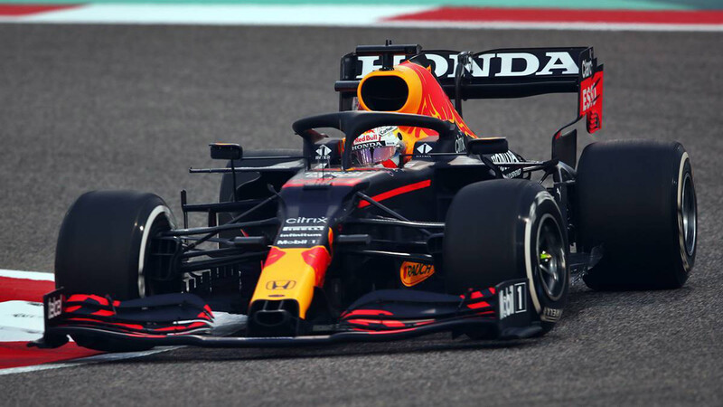

MONZA CARS s.r.l.
Modelos
Contacto
Sobre Nosotros
Entregas
Donde nos encontramos
Autos destacados
Marca: KIA
Modelo: Sorento
Versión: Sorento GT Line 2.2 CRDi 8AT AWD
Tipo de carrocería: Todoterreno
Combustible: Diesel
Velocidad máxima: 205 km/h
Cilindrada: 2199 cc
Potencia máxima: 200 cv
Consumo extraurbano: 6 l/100 km
Consumo urbano: 7.3 l/100 km
Consumo medio: 6.5 l/100 km
Aceleracion de 0 a 100 Km/h: 9.4 s
Seccion noticias
¿Qué necesita Verstappen para ser campeón en Suzuka?
